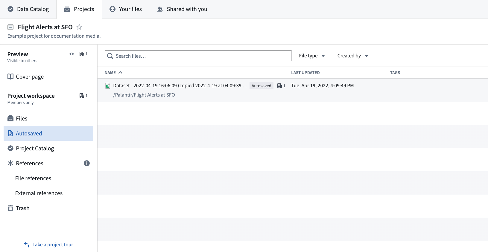
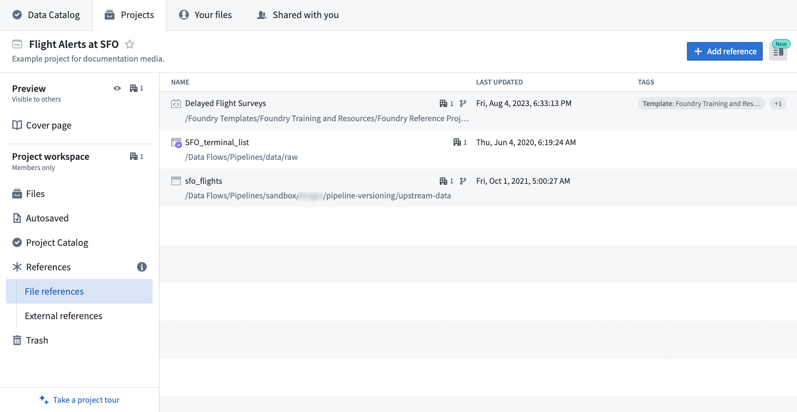
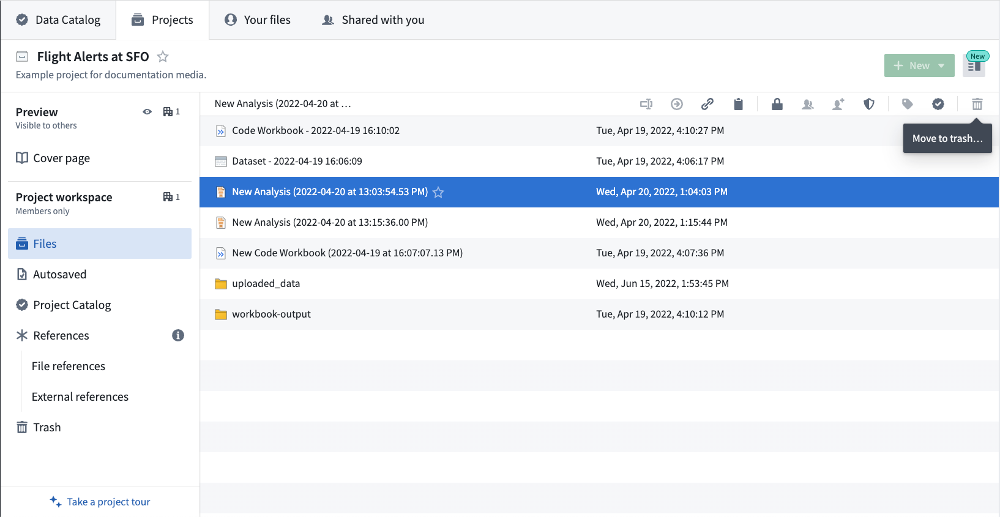
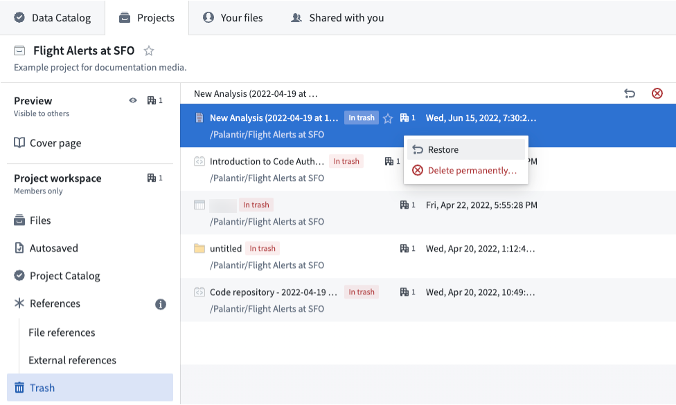
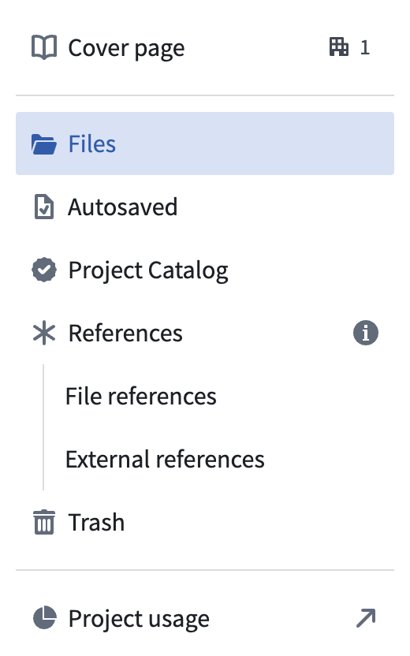

The Project navigation panel includes Preview and Project workspace sections which provide tools for documentation and managing lists of files.
The Cover page section provides a Markdown-based rich-text editor to write documentation for the Project. For more information, see the cover pages documentation.
The Files tab displays a collection of all files within a Project. The most important files in the project will appear in the pinned section at the top of this panel.
When you create a new file from an existing one, it is automatically saved in the Project's Autosaved section instead of in Your files. These files are marked by the Autosaved label and are visible by anyone who has access to the folder or Project. Autosaved files allow for quick work and reduce Project clutter.

When the files are manually saved, they will appear in the Files section.
When you create an autosaved file, it inherits the permissions of the folder where it was originally created. The user who created the autosaved file is the file Owner.
:::callout{theme="neutral"} You need to manually save an autosaved file before sharing it with other users.
Contact your Palantir representative to help configure autosave access. :::
As Projects define both a conceptual boundary around related work and a security boundary for applying and managing access, the flow of data requires special attention.
Project References allow you to manage the flow of data and packages across Project boundaries and is split up into 2 sections: File references and External references.
File references include any file from outside the Project that is used in the Project in Code Repositories, Code Workbook, Pipeline Builder, Fusion, or Contour. Users with the Editor role can add file references to a Project. File references can be removed by right-clicking on the file and selecting Remove References. Learn more about why file references are necessary.
External references are generally code packages automatically added to the project from various data analysis applications in order to run builds.

Each Project has its own Trash section. If you no longer need a file for your Project, you can delete the file by moving the file to the Trash. Select the file you want to delete, then select the Trash icon to Move to trash.

:::callout{theme="neutral"} After you move an item to Trash, the Trash state is applied immediately, but the Trash view may take some time to reflect the change because its listing is backed by search indexing. The item may already be in Trash even if it does not appear in the Trash view right away. To confirm the item's state while the listing catches up, review the Activity log for the Project, or open the item or folder directly and verify that it shows as In trash. :::
You can restore files from the Trash if you change your mind. In the Trash tab, select the file and then the Restore icon.

Restoring a file places it where it was before you deleted it and returns previous permissions.
Use the X button to permanently delete the selected file.
For users with the Owner role on a project, a link to view Project usage in Resource Management is available at the bottom of the navigation panel.

Access graph is a tool which allows you to visualize the security setup of a project. Use it to see the markings on the project, the groups who have a role on this project, and the users who are members of those groups. Access graph can be very helpful if your setup involves a lot of nested groups.